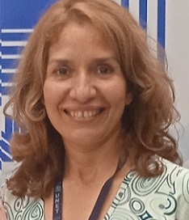
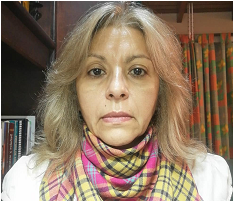

Dr. Gilberto Paredes
El Profesor Gilberto Paredes es Licenciado en Físca Pura. El Profesor Gilberto Paredes realizó estudios doctorales en El Centro de Física Fundamental de la ULA, especializándose en Caos, diámica no lineal y sistemas Complejos. El Profesor Gilberto Paredes ha escritos varios articulos cientificos en revistas internacionales relacionados con sus campos de conocimiento . Actualmente es el Jefe del Departamento de Matemática y Fisica y responsable de la Maestría de Matemáticas de la UNET.

Dra. tania Peña
Doctora en Innovación Educativa. Maestría en Matemática Educación Matemática. Licenciada en Educación: Mención Matemática e Informática. Profesora Titular a Dedicación Exclusiva adscrita al Dpto. de Matemática y Física de la Universidad Nacional Experimental del Táchira(UNET). Grupo de Investigación: Laboratorio de Investigación de Matemática Pura y Aplicada (LIMPA). áreas de interés Investigativo: Educación matemática, Innovación Educativa y Ambientes de aprendizajes personalizadosal.

Dra. Blanca Guillén
Recibio los titulos de Licenciada en Matematicas, distincion Cum Laude, (1996) y Magíster Scientiae en Matemáticas (1999) en la Universidad de los Andes (ULA), Mérida-Venezuela, y el título de Doctor en Ingeniería (2013) en la Universidad Simón Bolívar, Caracas-Venezuela. La Dra. Guillén es Profesora del Departamento de Matemáticas de la Universidad Nacional Experimental de Táchira (UNET) e investigadora del Grupo de Bioingeniería de esta misma casa de estudios. Dentro del ámbito de las matemáticas su área de interés es el Análisis Numérico.

MSc. Blanca Gámez
Gámez Valero Blanca, profesor Asociado de la Universidad Nacional Experimental del Táchira. Msc en Matemática, profesora adscrita en el Departamento de Matemática y Física en la Cátedra de Matemática. Profesora de las asignaturas de Matemática I, II III y IV y Lógica Matemática en el Decanato de Postgrado. Profesora en formación permanente de los cursos de Matemática Preuniversitaria, Funciones y Graficación, Matemática de 5to y 6to grado